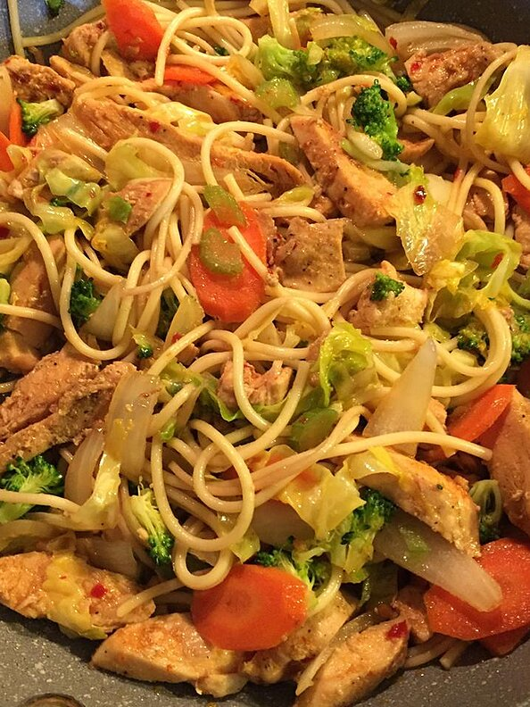

Chicken Yakisoba Recipe

Description
This traditional Japanese yakisoba noodle dish includes cabbage and chicken in a spicy sauce.
Ingredients
- 2 tablespoons canola oil
- 1 tablespoon sesame oil
- 2 skinless, boneless chicken breast halves - cut into bite-size pieces
- 2 cloves garlic, minced
- 2 tablespoons Asian-style chile paste"
- ½ cup soy sauce
- 1 tablespoon canola oil
- ½ medium head cabbage, thinly sliced
- 1 onion, sliced
- 2 carrots, cut into matchsticks
- 1 tablespoon salt
- 2 pounds cooked yakisoba noodles
- 2 tablespoons pickled ginger, or to taste
Steps
- Heat 2 tablespoons canola oil and sesame oil in a large skillet over medium-high heat. Cook and stir chicken and garlic in hot oil until fragrant, about 1 minute. Stir chile paste into chicken mixture; cook and stir until chicken is completely browned, 3 to 4 minutes. Add soy sauce and simmer for 2 minutes. Pour chicken and sauce into a bowl.
- Heat 1 tablespoon canola oil in the skillet over medium-high heat; cook and stir cabbage, onion, carrots, and salt in hot oil until cabbage is wilted, 3 to 4 minutes.
- Stir the chicken mixture into the cabbage mixture. Add noodles; cook and stir until noodles are hot and chicken is no longer pink inside, 3 to 4 minutes. Garnish with pickled ginger.